Puedes acceder a este santuario desde que llegas a la región de la torre de Picos Gemelos. Se encuentra en una pequeña isla al norte de la región. Puedes llegar a ella planeando con la paravela.
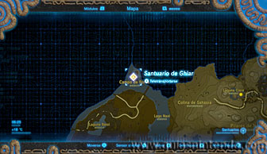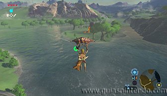
Según llegas se activará la Prueba heroica "¡No pises las flores!" y una chica te pedirá que no pises las flores que rodean el santuario. Si lo haces tendrás que volver a repetir el recorrido, pero si andas con cuidado por donde no haya ninguna flor llegarás sin problema a la entrada y se completará dicha prueba heroica.
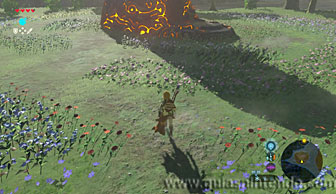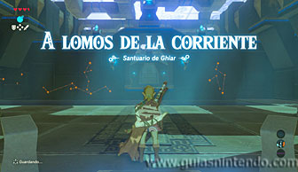
En este santuario tendrás que usar el módulo de Paralizador para parar la balsa que va por el agua justo delante del camino. Sube a ella y continúa avanzando.
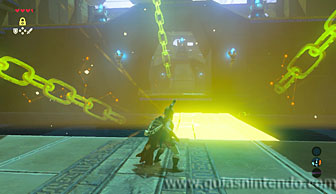
En el siguiente tramo vuelves a encontrar una zona con agua, ahora hay tres balsas y debes hacer lo mismo que antes para continuar. Sin embargo, puedes parar una de ellas y a continuación usar el módulo del Imán para sacar un cofre del fondo (contiene un ópalo). Deposítalo fuera del agua y después paraliza una balsa delante del camino para continuar.
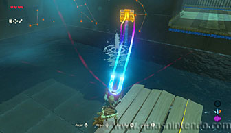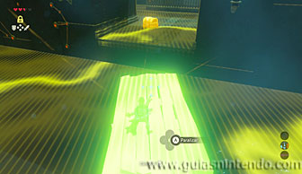
Por último, llegas a una última zona de agua con una reja en medio. Lo primero que puedes hacer es usar un bloque de hielo para sacar un cofre del fondo que contiene 5 flechas de hielo. Después puedes estallar uno de los barriles explosivos que flotan por el agua cuando pasen por delante de los bloques agrietados que tapan el camino.
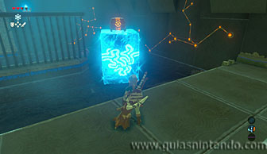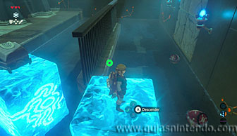
O sencillamente puedes lanzar una bomba hacia ellos. Así llegarás al altar del santuario y podrás examinarlo para obtener un símbolo de valía.
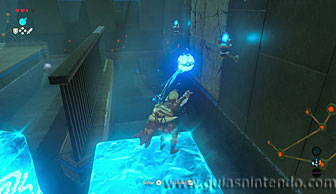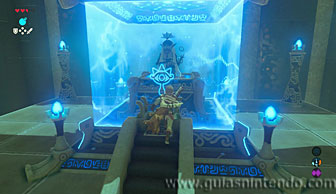